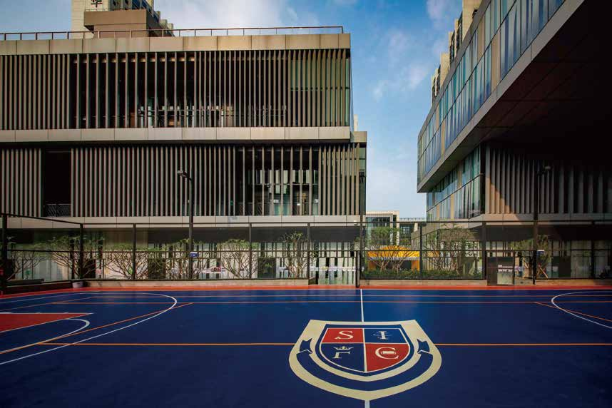

多元社团 Club
覆盖学术、艺术、体育、科创四大类别，让学生找到伙伴，并把热爱发展为特长。

Campus Life
在青云书院，自由不是口号，而是教育的底色。社团、主题活动、研学与竞赛共同构成学生发现天赋、重塑自信、锤炼领导力的演练场。
覆盖学术、艺术、体育、科创四大类别，让学生找到伙伴，并把热爱发展为特长。
每月至少一次主题校园活动，从认识自我、培养同理心出发，逐步锻炼合作与领导力。
通过海内外研学与跨文化体验，让学生在真实情境中培养全球视野与跨文化交流能力。
音乐剧、视觉艺术、球类运动与体能训练，让学生在表达与运动中建立自信和团队精神。


Beyond Timetable
项目展、艺术展演、学生论坛、科创赛事和公益服务，让学生在真实场景中练习表达、协作与领导。每一次集体活动都在帮助学生发现兴趣，也让家长看见成长的证据。
了解 STEAM 项目

 STEAM
看学生如何做项目
STEAM
看学生如何做项目
 Visit
预约探校与开放日
Visit
预约探校与开放日